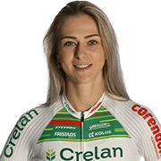

Inge Van Der Heijden

| Nombre: | Inge Van Der Heijden | Fecha de Nacimiento: | 12 Agosto 1999 |
|---|---|---|---|
| Edad: | 24 años | Lugar de Nacimiento: | Schaijk, Países Bajos |
| Residencia: | Nunspeet, Países Bajos | Nacionalidad: | Países Bajos |
| Peso: | 53 kg | Altura: | 1,65 m |
| Equipo: | Crelan - Corendon | Categoría: | Femenina |
| UCI World Ranking: | Victorias: |
|---|---|
| 9 posición | 7 victorias |
| Año | Equipo |
| 2019 | CCC - Liv |
| 2020 | Ciclismo Mundial |
| 2021 | Plantur - Pura |
| 2022 | Plantur - Pura |
| 2023 | Fenix - Deceuninck |
| 2024 | Crelan - Corendon |
| Años | Ranking | Categoría | Clase | Posición |
|---|---|---|---|---|
| 2023-2024 | UCI World Cup | Elite | CDM | 4 |
| 2023-2024 | Superprestige | Elite | SP | 3 |